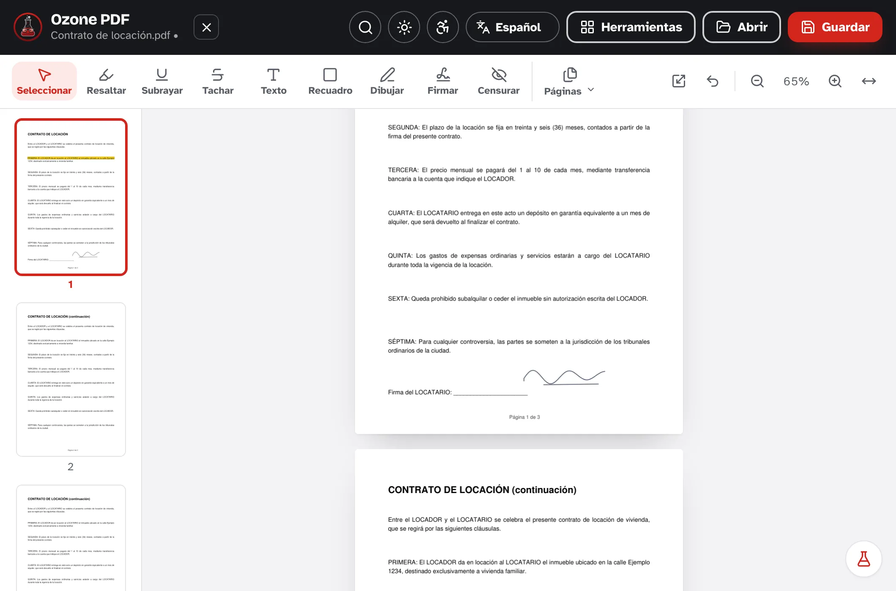
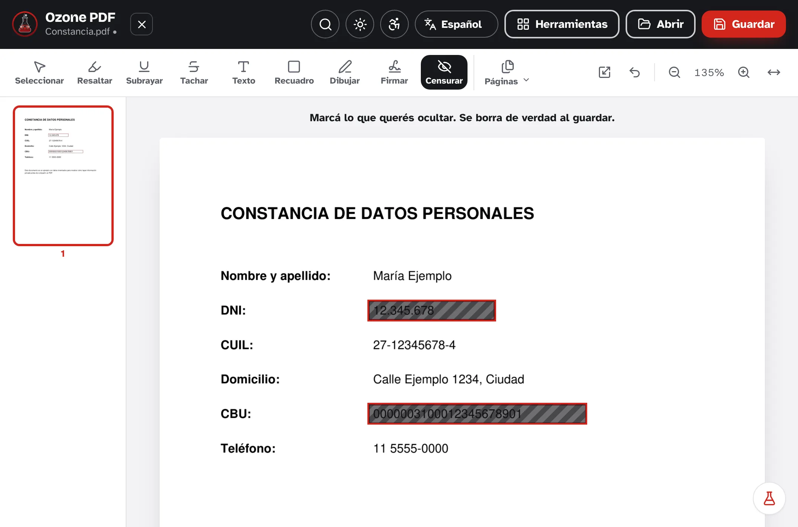
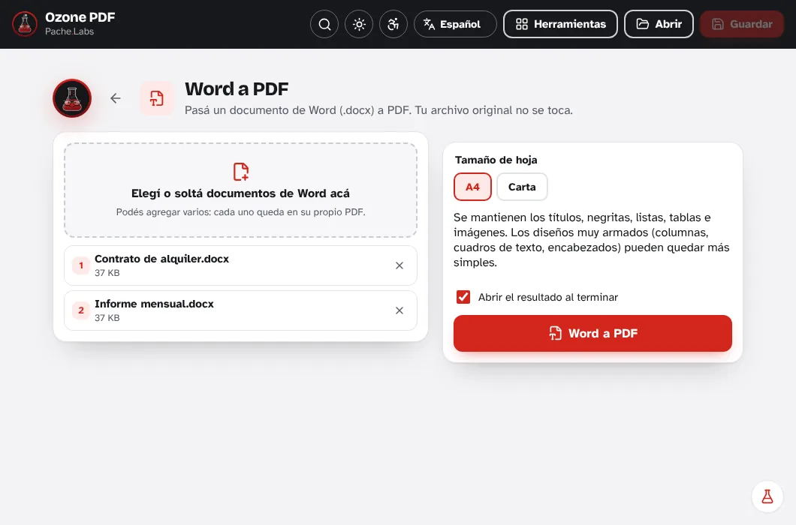

印刷せずに署名・書き込み
署名は一度描くだけ（必要なら下に氏名・役職・登録番号も）。あとは好きな場所に置けます。ハイライト・下線・書き込み・四角・手書きも、動かしたり直したりできます。まちがえたら Ctrl+Z で元に戻せます。

 Ozone PDF
Ozone PDF
文書の署名、編集、墨消し、結合、分割、圧縮、スキャンが無料。すべてあなたのパソコンの中で完結します。
Windows・Mac・Linux 対応。無料でオープンソース。

さまざまな業種で機密情報を扱う多くの人が、PDF の結合や圧縮のためにウェブサイトを使っているのを見て、このプログラムを作りました。契約書、給与明細、身分証が、誰が運営しているのかわからないサイトにアップロードされていたのです。サイバー攻撃が増え、人工知能がそれをさらに容易にしている今、インターネットにアップロードした書類は、さらされた書類です。Ozone PDF はそうしたサイトと同じことを、すべてあなたのパソコンの中で行います。
署名は一度描くだけ（必要なら下に氏名・役職・登録番号も）。あとは好きな場所に置けます。ハイライト・下線・書き込み・四角・手書きも、動かしたり直したりできます。まちがえたら Ctrl+Z で元に戻せます。

身分証番号や口座番号など見せたくない部分を指定すると、保存時にその下の内容がファイルから消されます。黒い四角で隠すだけではありません。

ファイルをウィンドウにドラッグし、好きな順に並べれば完了。1 つの PDF ができあがります。元のファイルはそのままで、常に新しいコピーとして保存されます。
Word 文書を PDF にして送ったり、PDF を Word にして編集したり。見出し・太字・箇条書き・表・画像はそのまま。ファイルをどこにもアップロードしません。

システムが 25 MB を超えるファイルを受け付けない？サイズ、ページ範囲、または数ページごとに分割できます。圧縮して軽くすることもできます。

カメラで用紙を撮るか、写真から選ぶだけ。用紙を検出して切り抜き、まっすぐにして、スキャンしたような仕上がりにします。1ページにつき1枚撮れば PDF ができあがります。

送る前に AES-256 暗号化で PDF を保護したり、パスワードがわかっている PDF からパスワードを外したりできます。

検索欄に必要なこと（「結合」「パスワード」「写真」）を入力すれば、ツールが出てきます。ライトとダーク、好きなモードを選べます。

セキュリティは機能のひとつではなく、Pache Labs が存在する理由そのものです。各バージョンで、プログラムがインターネットに接続しないことをテストで確認し、コードは誰でも確認できるよう公開し、広告やアカウント、トラッキングを追加することは決してありません。あなたのデータを危険にさらす変更があれば、それはリリースしません。
無料。Windows 10・11、macOS 10.15 以降、Linux に対応。Android 版もまもなく登場。
おすすめ：Microsoft Store からなら、Windows の警告なしでインストールでき、自動で更新されます。
.exe インストーラーでは、プログラムが新しく、まだダウンロードした人が少ないため、「Windows によって PC が保護されました」と表示されることがあります。詳細情報をクリックし、実行をクリックしてください。Microsoft Store からインストールすれば、この警告は表示されません。
.dmg を開いて、Ozone PDF を「アプリケーション」にドラッグします。初回は、まだ Apple の署名がないため、Mac がプログラムを検証できないと表示することがあります。システム設定 > プライバシーとセキュリティ で このまま開く をクリックしてください。必要なのは一度だけです。
IT 担当の方ですべての PC にインストールしたい場合は、そのための .msi インストーラーがあります。グループ ポリシー（GPO）、Intune、SCCM に対応しています。
C:\Program Files\Ozone PDF にインストールされます。サイレント インストール
msiexec /i Ozone.PDF_2.1.11_x64_en-US.msi /qnアンインストール
msiexec /x Ozone.PDF_2.1.11_x64_en-US.msi /qnファイアウォールのルール（任意）：
New-NetFirewallRule -DisplayName "Ozone PDF 2 - sin red" -Direction Outbound -Action Block -Program "C:\Program Files\Ozone PDF\ozone-pdf.exe"不具合を見つけた、欲しいツールがない、アイデアがある？すべてのメッセージを読んでいます。
pache.labs@gmail.com にメールでもご連絡いただけます。
Ozone PDF は無料で、これからも無料です。このようなプログラムをもっと作る手助けをしていただけるなら、コーヒーをおごってもらえるとうれしいです。それが難しくても、必要としている人に教えてもらえるだけで大きな助けになります。